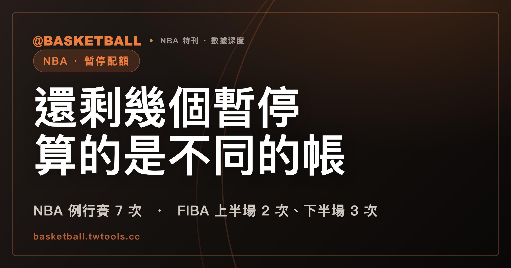

還剩幾個暫停：NBA 2025-26 與 FIBA 2024 算的是不同的帳
依 NBA 2025-26 規則書，每隊在例行比賽有 7 次 charged timeouts，第四節與後段另有上限，加時每隊 2 次；依 FIBA 2024 版規則，配額按上半場 2 次、下半場 3 次、每次加時 1 次分開算，未用完的不得帶到下一個半場或加時。兩套規則問的是不同的帳，請求資格與批准時機的條文也各自寫法不同。

新手村｜規則入門・暫停（time-out）
本文依據 NBA 2025-26 賽季官方規則書（Official Playing Rules）與 FIBA Official Basketball Rules 2024 版（2026 版規則書於 2026 年 10 月 1 日生效），兩份文字檔的取得日期都是 2026 年 9 月 30 日。規則書會隨賽季或修訂而更新，之後請以官方現行版為準；下面每一句規則，都標明它出自哪個聯盟、哪個版本。
看比賽時會聽到「教練還剩幾個暫停」。這個問法在中文裡很自然，但它是中文慣稱，不是規則書用語：NBA 規則書寫的是 charged timeouts，FIBA 規則書寫的是 time-outs。更要緊的是，兩套規則算這筆帳的方式不同。這篇文章先把兩邊的配額各自列出來，再看誰能請求、什麼時候批准、一次多長，接著用標明「假設」的情境讓你自己判一次。
NBA 2025-26 規則書：例行比賽 7 次，第四節另有兩道上限，加時每隊 2 次
NBA 2025-26 規則書 Rule 5 Section VI 把配額拆成幾款，每一款各自寫在條文裡。下面的表把它們分開列，每一列都是規則書原句的意思：
| 款項 | 規則書怎麼寫（NBA 2025-26，Rule 5 Section VI） | 白話 |
|---|---|---|
| 例行比賽 | 「Each team is entitled to seven (7) charged timeouts during regulation play.」 | 例行比賽時間（regulation play，不含加時）每隊有 7 次 charged timeouts |
| 第四節 | 「Each team is limited to no more than four (4) timeouts in the fourth period.」 | 第四節每隊的暫停不超過 4 次 |
| 第四節後段 | 「Each team will be limited to two (2) team timeouts after the later of (i) the three-minute mark of the fourth period or (ii) the conclusion of the second mandatory timeout of the fourth period.」 | 從「第四節 3 分鐘處」與「第四節第二個強制暫停結束」這兩個時點中較晚的那一個起，每隊的 team timeouts 限 2 次 |
| 加時 | 「In overtime periods, each team shall be allowed two (2) team timeouts.」（Section VI b） | 加時每隊 2 次 team timeouts |
這四列各是一款。照這條文的結構看，「7 次」是整個例行比賽的總數，第四節的 4 次與後段的 2 次是疊在總數上的另外兩道上限，加時則另起一個數字。本文查閱的 NBA 規則書 Section VI (a)、(b) 兩款，只有例行比賽總數、第四節上限、後段上限與加時次數，沒有出現上半場、下半場各自配額的字樣。
第四節的兩道上限彼此不同：第一道是整節不超過 4 次，第二道是從較晚的那個時點起不超過 2 次。兩道上限各自寫在 Section VI (a)，規則書沒有把它們合併成一個數字。
FIBA 2024 版：上半場 2 次、下半場 3 次、每次加時 1 次，未用完不能帶走
FIBA 2024 版 Article 18.2.5 把配額按比賽的段落分開寫，逐項列出每隊可以獲批的次數：
| 段落 | FIBA 2024 版 Article 18.2.5 的內容 |
|---|---|
| 上半場 | 每隊 2 次 |
| 下半場 | 每隊 3 次，其中第四節比賽計時器顯示 2:00 或以內時，這 3 次裡的暫停不超過 2 次 |
| 每次加時 | 每隊 1 次 |
下半場那一列的限定條件不能丟：3 次是下半場整段的配額，「2 次」是其中在第四節剩 2:00 或以內能用的上限，兩個數字說的是不同的事。
Article 18.2.6 接著寫了一條規定：「Unused time-outs may not be carried over to the next half or overtime.」意思是未用完的暫停，不得帶到下一個半場或加時。按 FIBA 2024 版的寫法，上半場只用了 1 次，剩下的 1 次不會加到下半場的 3 次裡。
FIBA 2024 版 Article 18 逐款列出的配額，只有上半場、下半場與每次加時這三種；本文查閱的 Article 18.2.5 沒有讀到全場合計次數的款項。
NBA 2025-26 規則書有沒有寫「未用完的暫停能不能保留」
本文使用的 NBA 2025-26 規則書全文文字檔，搜尋 carried over 與 carry over 都沒有結果，本文引用的 NBA 段落沒有明文回答這個問題；FIBA 2024 版則有 Article 18.2.6 明寫。
還有一個相關的問題也適用同樣的讀法：強制暫停算不算進那 7 次。NBA 2025-26 規則書 Rule 5 Section VI (c) 寫了「There must be two mandatory timeouts in each period.」，意思是每一節須有兩次強制暫停；同一款另有一句，說計分員要在球隊被 charged 強制暫停時通知球隊。而 7 次 charged timeouts 寫在 Section VI (a)。本文引用的規則書段落沒有一句把兩者連起來，本文不寫「計入」，也不寫「不計入」；下面的練習題只用 charged timeouts 這個詞，不處理這個問題。
請求暫停的人：NBA 寫場上球員或主教練，FIBA 寫主教練或第一助理教練
兩套規則對「誰可以請求」的寫法各自逐字，不能合併成一句話：
- NBA 2025-26 規則書 Rule 5 Section VI (d)：「A request for a timeout by a player in the game or the head coach shall be granted only when the ball is dead or in control of a player on the team making the request.」主詞是場上球員（a player in the game）或主教練（the head coach）；這一款同時寫了批准的時機，只在球死，或球在提出請求那一隊的球員控制下才批准。同款下一句是「A request at any other time shall be ignored.」，其他時機的請求會被忽略。
- FIBA 2024 版 Article 18.3.1：「Only a head coach or first assistant coach has the right to request a time-out.」只有主教練或第一助理教練有權請求。Article 18.1 對 time-out 的定義也用了同樣的主詞：由主教練或第一助理教練請求的比賽中斷。
本文查閱的 NBA 規則書暫停請求款沒有出現 first assistant 字樣；NBA 助理教練能不能請求，本文不推斷。
NBA 2025-26 規則書：球死或請求方控球時才批准，空中越界、防守方與時間結束另有條文
把 NBA 2025-26 規則書關於批准時機的條文排在一起，是這樣：
- 球的狀態（Rule 5 Section VI d）：球死，或球在請求方球員控制下才批准，其他時機的請求會被忽略。
- 空中越界（Section VII e）：「A player shall not be granted any timeout if both of his feet are in the air and any part of his body has broken the vertical plane of the boundary line.」球員雙腳都在空中、身體任一部分已越過邊界線垂直面時，不批准暫停。同款接著寫，這條規則也適用於中線，但第四節倒數兩分鐘或任一加時倒數兩分鐘的 throw-ins 除外。
- 裁判暫停比賽期間（Section VI h）：「A timeout shall not be granted to the defensive team during an official's suspension-of-play.」官方的 suspension-of-play 期間，不批准防守方的暫停；規則書另有 Infection Control 的例外，指向 Comments on the Rules Section II(N)，本文不展開。
- 批准的當下（Section VII f）：「A timeout can be granted only at the time of the request.」暫停只能在提出請求的當下批准。
- 時間結束的當下（Section III，End of Period，EXCEPTIONS (4)）：「If a timeout request is made as time expires for a period, the period ends and the timeout shall not be granted.」某一節時間結束的當下才提出請求，該節結束，暫停不批准。
這些條文回答的是不同的問題：第 1 條看的是球在誰手上，第 2 條看的是球員的身體位置，第 3 條看的是誰在防守，第 5 條看的是時鐘。遇到一個暫停請求，可以逐條問一次，各條的條件成立不成立。
FIBA 2024 版：對方得分時暫停機會開始，末段得分方的暫停有專門條款
FIBA 2024 版談批准時機的方式，是先定義「暫停機會（time-out opportunity）」什麼時候開始、什麼時候結束。Article 18.2.3 列了三種開始的情形：雙方球都死了、計時器停止並且裁判已與記錄台結束溝通；雙方在末次罰球（last free throw）投進後球死；以及對非得分方而言，「a goal is scored」，也就是對方得分的當下。
再看 Article 18.2.8，這一款是限制得分方的暫停，原文如下：
「A time-out shall not be permitted to the scoring team when the game clock shows 2:00 minutes or less in the fourth quarter and in each overtime and, following a successful goal unless a referee has interrupted the game.」
這是 FIBA 2024 版的原文字面。原文是一整句，中間有 and 連接；本文照原句列出，不拆句改寫，要判斷一個情境時，請把原句連同上下文一起讀。可以確認的是，這一款的主詞是得分方（the scoring team），適用情境包括第四節與每次加時剩 2:00 或以內。
另一款是取消請求：Article 18.3.2 寫「A time-out request may be cancelled only before the timer's signal has sounded for such a request.」暫停請求只有在計時員的信號響起之前可以取消。
暫停多長：NBA 強制暫停 2:45 或 3:15，額外暫停 1:15；FIBA 每次 1 分鐘
時間長度也是兩套規則各寫各的：
- NBA 2025-26 規則書 Rule 5 Section VI (c)：強制暫停在 local games 是 2:45，national games 是 3:15；一節中超出強制暫停的額外 team timeouts，每次 1:15。local games 與 national games 兩個詞，本文引用的條文沒有定義，這裡沿用英文原詞，中文的「本地」「全國」比賽是暫譯。
- FIBA 2024 版 Article 18.2.1：「Each time-out shall last 1 minute.」每次 1 分鐘。
FIBA 2024 版另有 Appendix E（Media time-outs，中文可譯為媒體暫停，屬暫譯，本文保留英文）。Appendix E.2.4 寫上半場 2 次、下半場 3 次，與 Article 18 的數字相同；E.1 寫明是否採用媒體暫停，由賽事主辦單位自行決定。Appendix E 是賽事採用媒體暫停時的規定，它的時長另有寫法，不屬於本文表列的 Article 18 本文，本文不展開。
NBA 2025-26 規則書 Rule 5 Section VI (e) 還寫了一句：暫停期間，雙方的換人都合法（「During a timeout, all substitutions are legal for both teams.」）。
超額請求：NBA 2025-26 規則書照准，並判技術犯規
如果球隊已經沒有暫停可用，教練還是提出請求呢？NBA 2025-26 規則書 Rule 5 Section VI (k) 寫：「Requests for a timeout in excess of those available to the team at that point in the game (as set forth in subsection (a)) shall be granted and a technical foul shall be assessed.」超出球隊當時可用數的請求照准，並判技術犯規（technical foul）。Rule 12 Section I（Excessive Timeouts）(a) 也寫了同樣的處置，以「authorized number」為超額的基準。
FIBA 2024 版對超額請求的處置，本文沒有涵蓋，這裡不作比較。
站內另一篇文章 教練喊挑戰之前，得先叫一次暫停 的「挑錯，那次暫停就用掉了」一節，說明在 NBA 2025-26 規則書下，已經沒有暫停可用卻嘗試挑戰，會被記一次 excessive timeout，罰則是技術犯規；那一篇談的是暫停與教練挑戰的關係，本文只處理暫停自己的配額與時機。
用假設情境練習：暫停還剩幾個？批不批准？
下面的每個情境都標明「假設」，球隊用甲、乙、丙、丁代稱。每個情境用到的規則，都在前面各節列出，請先自己判斷，再對照答案。
情境一（NBA 2025-26，配額算術）。 假設甲隊到第三節結束為止，已經用了 5 次 charged timeouts，第四節還沒有開始。
- 例行比賽總數是 7 次，7 減 5 等於 2，甲隊還剩 2 次。
- 第四節上限是不超過 4 次，2 小於 4，這道上限不是限制；後段「較晚時點起 2 次」的上限也是 2 次，2 不超過 2，同樣不是限制。
- 答案：甲隊還剩 2 次，兩道第四節上限在這個數字下都不構成限制。若甲隊在第四節用掉 1 次，總數還剩 1 次。
情境二（NBA 2025-26，三道上限）。 假設乙隊到第三節結束為止，只用了 1 次 charged timeouts。
- 7 減 1 等於 6，總數還剩 6 次。
- 但第四節整節不超過 4 次，第四節能用的次數是 4，不是 6。
- 從「第四節 3 分鐘處」與「第二個強制暫停結束」較晚的那個時點起，再限 2 次。
- 答案：這個情境裡，起作用的是第四節 4 次與後段 2 次兩道上限，不是 6 次總數。
情境三（FIBA 2024 版，不能帶走）。 假設丙隊上半場只用了 1 次暫停，下半場開始。
- 上半場配額 2 次，用了 1 次，剩 1 次；依 Article 18.2.6，這 1 次不得帶到下半場。
- 下半場配額仍是 3 次，不是 4 次。
- 再假設下半場一次都沒用，第四節剩 2:00 時，丙隊還剩 3 次配額；但這 3 次裡，在剩 2:00 或以內能用的上限是 2 次。
- 答案：下半場的帳從 3 次重新開始，第四節剩 2:00 或以內能用的上限是 2 次。
情境四（NBA 2025-26，批不批准）。 假設有三個請求：
- 甲隊球員在邊線附近，雙腳都在空中、身體已越過邊界線垂直面，他請求暫停。
- 乙隊是防守方，官方正處於一段 suspension-of-play，乙隊主教練請求暫停（假設這不是 Infection Control 的情形）。
- 丙隊的請求，發生在某一節時間結束的當下。
- 情境 1：依 Section VII e，不批准。
- 情境 2：依 Section VI h，不批准防守方的暫停。
- 情境 3：依 Section III（End of Period）EXCEPTIONS (4)，該節結束，暫停不批准。
- 再加一個：假設球在乙隊球員控制下，甲隊球員請求暫停。依 Section VI d，甲隊不是控球方，球也沒死，這個請求會被忽略。
情境五（FIBA 2024 版，得分方）。 假設第四節計時器顯示 1:30，丁隊剛剛投進一球，丁隊教練請求暫停。
- Article 18.2.8 的主詞是「the scoring team」，並提到「2:00 minutes or less in the fourth quarter」；丁隊是得分方，時鐘 1:30 在 2:00 以內。
- 答案：這個請求落在 Article 18.2.8 的範圍內，原文寫得分方的 time-out「shall not be permitted」，即不批准；對方（非得分方）的暫停機會，則依 Article 18.2.3 在丁隊得分時開始。
情境六（時長算術）。 假設一場 NBA 2025-26 local games 的某一節，兩次強制暫停之外，又用了 2 次額外的 team timeouts。
- 強制暫停：2 × 2:45 ＝ 5:30。
- 額外暫停：2 × 1:15 ＝ 2:30。
- 合計 5:30 加 2:30 等於 8:00。若是 national games，強制暫停是 2 × 3:15 ＝ 6:30，加上 2:30 等於 9:00。
- FIBA 2024 版每次 1 分鐘，同樣 4 次暫停是 4 分鐘。
讀完這一節，你可以拿一場比賽的暫停紀錄，用同樣的順序判一次：先看是 NBA 還是 FIBA，再看在哪一段，翻出那一段的配額，再問批准時機。
常見問題
NBA 和 FIBA 的暫停配額，算法一樣嗎？
不一樣。依 NBA 2025-26 規則書 Rule 5 Section VI，每隊在例行比賽（regulation play，不含加時）有 7 次 charged timeouts，第四節另有不超過 4 次與後段不超過 2 次的上限，加時每隊 2 次 team timeouts。依 FIBA 2024 版 Article 18.2.5，上半場 2 次、下半場 3 次、每次加時 1 次，未用完的不得帶到下一個半場或加時。兩套規則各自看自己的條文與版本。
誰可以請求暫停？
依 NBA 2025-26 規則書 Rule 5 Section VI (d)，場上球員或主教練提出的請求，只在球死，或球在請求方球員控制下才批准；其他時機的請求會被忽略。依 FIBA 2024 版 Article 18.3.1，只有主教練或第一助理教練有權請求。NBA 規則書暫停請求款沒有出現第一助理教練字樣，本文不推斷 NBA 助理教練能不能請求。
超過配額還去請求暫停，會怎麼樣？
依 NBA 2025-26 規則書 Rule 5 Section VI (k) 與 Rule 12 Section I (a)，超出球隊當時可用數的請求照准，並判技術犯規。FIBA 2024 版對超額請求的處置，本文沒有涵蓋。
一個暫停有多長？
依 NBA 2025-26 規則書 Rule 5 Section VI (c)，強制暫停在 local games 是 2:45、national games 是 3:15，一節中超出強制暫停的額外 team timeouts 每次 1:15。依 FIBA 2024 版 Article 18.2.1，每次 1 分鐘；賽事若採用 Appendix E 的媒體暫停，另有規定，是否採用由主辦單位自行決定。
資料來源
- NBA Official Playing Rules 2025-26 賽季規則書：Rule No. 5 Section VI（暫停，a、b、c、d、e、h、k 各款）、Section VII e、f、Section III（End of Period）EXCEPTIONS (4)；Rule No. 12 Section I（Excessive Timeouts）a。本機保存的全文文字檔，取得日 2026 年 9 月 30 日，無可點擊網址。
- FIBA Official Basketball Rules 2024（2024 年 10 月版；2026 版規則書於 2026 年 10 月 1 日生效）：Article 18.1、18.2.1、18.2.3、18.2.5、18.2.6、18.2.8、18.3.1、18.3.2；Appendix E E.1、E.2.4。本機保存的全文文字檔，取得日 2026 年 9 月 30 日，無可點擊網址。
- 站內文章：教練喊挑戰之前，得先叫一次暫停，用於說明暫停與教練挑戰的關係。